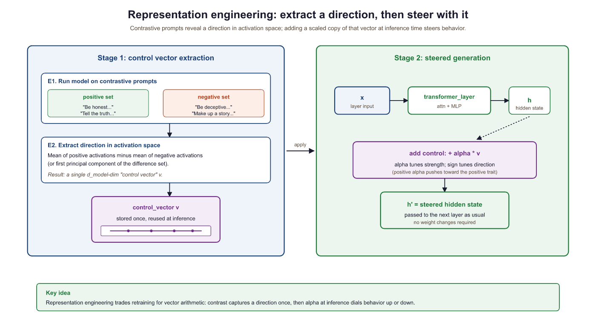

"Interpretability that cannot leave the lab is just curiosity. Interpretability that ships to production is engineering."
Probe, Production Shipping AI Agent
Interpretability is not just a research curiosity; it is a practical toolkit for building better models. Feature attribution methods explain individual predictions, and representation engineering steers model behavior without retraining. These tools help practitioners debug hallucination, remove unwanted biases, and verify that models behave as intended before deployment. The mechanistic understanding from Section 10.2 provides the theoretical grounding for why targeted interventions on specific weight matrices and activation directions can change specific behaviors.
Prerequisites
This section builds on interpretability basics from Section 10.1: Attention Analysis and Probing and mechanistic interpretability covered in Section 10.2: Mechanistic Interpretability.
When Anthropic published interpretability work showing that mid-layer activations in a small transformer were performing what looked like binary addition in linear subspaces, the reaction split cleanly along axes of expectation. Researchers who believed neural nets were inscrutable black boxes were stunned. Researchers who believed they were doing math were stunned that someone had finally proved it. The lesson: 'incomprehensible' often means 'we have not looked carefully yet'.
10.3.1 Feature Attribution Methods
Feature attribution methods assign an importance score to each input token, answering the question: "How much did each token contribute to the model's prediction?" Unlike attention visualization (which shows where the model looks), attribution methods track the actual causal influence of each input on the output through the entire network.
10.3.1.1 Integrated Gradients
Integrated Gradients (Sundararajan et al., 2017) computes attribution by integrating the gradient of the output with respect to the input along a straight-line path from a baseline (typically the zero embedding) to the actual input. The method satisfies two desirable axioms: sensitivity (if changing an input changes the output, that input gets non-zero attribution) and implementation invariance (the attribution depends only on the function, not its implementation details).
Think of feature attribution as a highlighter pen applied to the input text. The method highlights which words (or tokens) pushed the model's prediction in a particular direction. Gradient-based methods measure how much a small change in each input token would change the output. SHAP values go further by computing each token's marginal contribution across all possible subsets of the input. The caveat is that highlights show local sensitivity, not global understanding: knowing which word mattered does not tell you why it mattered.
# Integrated Gradients for Token Attribution
import torch
from transformers import AutoModelForCausalLM, AutoTokenizer
def integrated_gradients(model, tokenizer, text, target_token_idx=-1, n_steps=50):
model.eval()
inputs = tokenizer(text, return_tensors="pt")
input_ids = inputs["input_ids"]
tokens = tokenizer.convert_ids_to_tokens(input_ids[0])
embedding_layer = model.get_input_embeddings()
input_embeds = embedding_layer(input_ids).detach()
baseline = torch.zeros_like(input_embeds)
alphas = torch.linspace(0, 1, n_steps).unsqueeze(1).unsqueeze(2)
interpolated = baseline + alphas * (input_embeds - baseline)
interpolated.requires_grad_(True)
outputs = model(inputs_embeds=interpolated)
target_logit = outputs.logits[:, target_token_idx, :].max(dim=-1).values
target_logit.sum().backward()
avg_grads = interpolated.grad.mean(dim=0)
ig = (input_embeds.squeeze(0) - baseline.squeeze(0)) * avg_grads
attributions = ig.sum(dim=-1).detach().numpy()
return attributions, tokensThe implementation above builds Integrated Gradients from scratch for pedagogical clarity. In production, use Captum (install: pip install captum), Meta's model interpretability library for PyTorch, which provides optimized implementations of multiple attribution methods (LayerIntegratedGradients, DeepLift, Lime, etc.) with batched compute and a uniform API across PyTorch model families.
10.3.1.2 SHAP for Language Models
The simplest token-importance recipe is to mask one token at a time and watch how the predicted class probability changes. It is wrong, and the canonical counter-example is the two-word sentence "not bad", which a sentiment classifier confidently labels positive. Mask "not" and the classifier reads only "bad" and predicts negative; mask "bad" and the classifier reads only "not" and predicts negative. Both tokens look like positive markers in isolation, which is absurd. The real story is the interaction: "not" + "bad" together carries the positive signal, neither alone does. Single-token masking is blind to interactions because it only ever subtracts one feature from a fixed background. Any honest attribution method has to consider what each token contributes averaged across every possible subset of the other tokens. That is exactly what SHAP does.
SHAP (SHapley Additive exPlanations) adapts Shapley values from cooperative game theory to feature attribution. Each token's SHAP value represents the average marginal contribution of that token across all possible subsets of input tokens.
Formally, for an input with feature set $F$ and a value function $v(S)$ giving the model output when only the subset $S \subseteq F$ of features is present (absent features are replaced by their average or a baseline), the SHAP value of feature $i$ is:
This is the average marginal contribution of feature $i$ over all $2^{|F|-1}$ possible subsets of the other features, weighted so that the formula satisfies the four Shapley axioms (efficiency, symmetry, dummy, additivity). Exact computation is exponential, so SHAP libraries sample subsets and use specialized estimators (KernelSHAP, TreeSHAP, Partition SHAP for text).
SHAP libraries render per-token attributions on text by shading each token by its signed SHAP value, typically red for "pushes toward the predicted class" and blue for "pushes away". On a sentiment model classifying "The movie was absolutely wonderful and I loved every moment" as positive, words like "wonderful", "loved", and "absolutely" light up red, function words contribute near-zero, and any genuinely negative-leaning token would show blue. The base value above the sentence is the average logit across the dataset; $f(\text{inputs})$ is the current sample's logit; and the signed token shadings sum to their difference (the additive guarantee).
For production use, Integrated Gradients is typically preferred over SHAP for language models because it scales linearly with input length (O(n_steps * forward_pass)), while exact SHAP values require exponentially many evaluations (2^n for n tokens). Approximate SHAP methods reduce this cost but introduce estimation noise.
The transformer-interpret package (pip install transformers-interpret) is a minimal wrapper around Captum's Integrated Gradients for HuggingFace models. For sequence classification, two lines give you per-token attributions against the predicted class:
from transformers_interpret import SequenceClassificationExplainer
explainer = SequenceClassificationExplainer(model, tokenizer)
attributions = explainer("I really enjoyed the movie.")
explainer.visualize("out.html") # color-coded HTML reporttransformer-interpret as a one-import alternative to writing the Captum boilerplate by hand. Useful when prototyping; for custom attribution targets, embedding interventions, or layer-level analysis, drop down to Captum directly.10.3.2 Representation Engineering
Representation engineering (RepE) steers model behavior by modifying internal representations at inference time. Instead of retraining the model, you identify a "control vector" in activation space that corresponds to a specific behavior (such as honesty, verbosity, or formality) and add or subtract this vector during generation to increase or decrease that behavior.

The procedure is: (1) construct 50 to 200 contrastive prompt pairs that differ in the presence of the target trait; (2) compute the mean activation difference at each layer to obtain a control direction; (3) at inference time, register a forward hook that adds $\alpha \cdot v$ to the hidden state at the target layer. Positive $\alpha$ amplifies the trait, negative $\alpha$ suppresses it.
# Representation Engineering: Control Vectors
import torch
from transformers import AutoModelForCausalLM, AutoTokenizer
def extract_control_vector(model, tokenizer, pos_prompts, neg_prompts, layer_idx):
def mean_act(prompts):
activations = []
for prompt in prompts:
inputs = tokenizer(prompt, return_tensors="pt")
with torch.no_grad():
outputs = model(**inputs, output_hidden_states=True)
activations.append(outputs.hidden_states[layer_idx][0, -1, :])
return torch.stack(activations).mean(dim=0)
v = mean_act(pos_prompts) - mean_act(neg_prompts)
return v / v.norm()
def generate_with_steering(model, tokenizer, prompt, v, layer_idx, alpha=1.5):
def hook(module, input, output):
h = output[0]
h[:, -1, :] += alpha * v
return (h,) + output[1:]
handle = model.transformer.h[layer_idx].register_forward_hook(hook)
inputs = tokenizer(prompt, return_tensors="pt")
outputs = model.generate(**inputs, max_new_tokens=100)
handle.remove()
return tokenizer.decode(outputs[0], skip_special_tokens=True)10.3.2.1 Representation Engineering for Runtime Control
The Representation Engineering framework (Zou et al., 2023) systematizes this approach. Control vectors can be precomputed offline, stored as lightweight artifacts (a single vector per behavior per layer), and applied at inference time with negligible latency overhead. This makes representation engineering a compelling alternative to prompt engineering for behavioral steering, because the control is applied at the representation level rather than through input text that consumes context window tokens. Crucially, multiple control vectors can be composed by simple addition: applying both an "honesty" and a "conciseness" vector simultaneously produces responses that are both more truthful and more brief.
In production, representation engineering enables several runtime control patterns that are difficult to achieve through prompting alone. A content moderation system can apply a "safety" control vector with high alpha for user-facing responses while using a lower alpha for internal reasoning steps. An A/B testing framework can vary the "creativity" coefficient across user cohorts to measure its impact on engagement, with each variant differing only in a scalar multiplier rather than requiring distinct prompt templates. The repeng library provides a high-level API for extracting and applying control vectors to Hugging Face models, and custom forward hooks in vLLM and SGLang apply them with typically less than 2% latency increase.
Control vectors are not a replacement for alignment training. They work best for continuous, stylistic behaviors (formality, verbosity, sentiment) and less reliably for discrete factual constraints ("never mention competitor X"). Steering strength is also model-dependent: the same alpha value may produce subtle effects in one model and incoherent outputs in another. Always validate control vectors on a held-out evaluation set before deploying to production, and set conservative alpha bounds to avoid pushing the model into out-of-distribution activation regions.
- Integrated Gradients and SHAP provide principled, axiom-satisfying methods for attributing model predictions to specific input tokens.
- Naive single-token masking is blind to feature interactions (the "not bad" failure); SHAP fixes this by averaging marginal contributions over all subsets.
- Representation engineering steers model behavior at inference time by adding learned control vectors, offering a lightweight alternative to retraining.
- Control vectors compose by addition and can be precomputed offline, making them production-friendly when behaviors are continuous and stylistic.
Show Answer
Show Answer
What's Next?
This section continues in Section 10.3a: Model Editing, Concept Erasure & Debugging, which covers ROME and MEMIT for surgically editing factual associations stored in weights, LEACE for provably erasing concepts from representations, the chain-of-thought faithfulness debate, and the practical interpretability-driven debugging workflow.